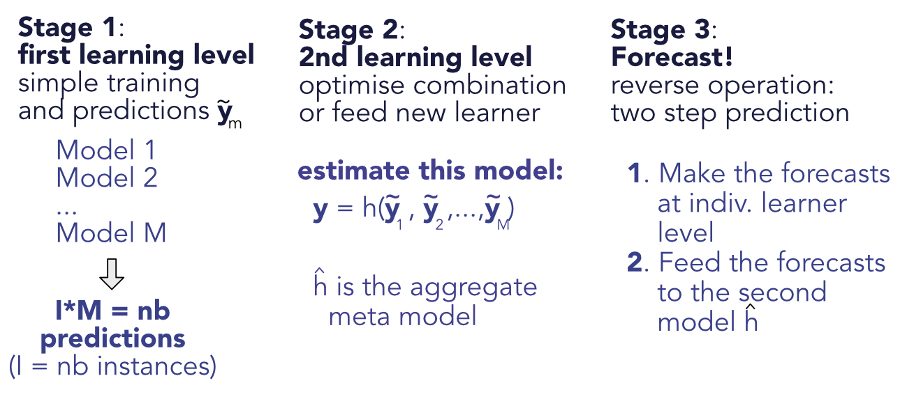
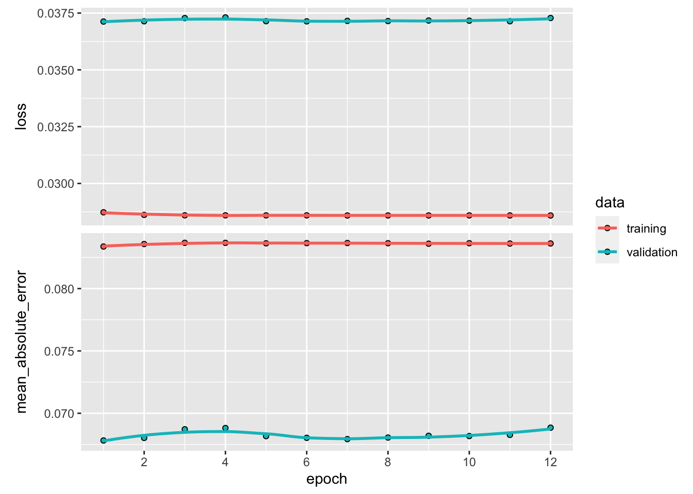
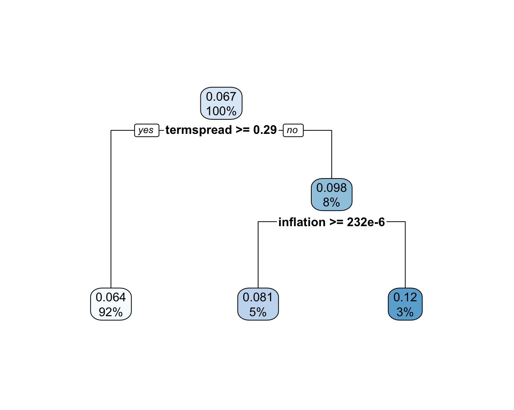

11 集成模型
让我们说实话。当面对预测任务时，确定 ML 工具之间的最佳选择并不明显：惩罚回归、树方法、神经网络、SVM 等。一个自然而诱人的替代方案是 联合 几种算法（或由它们产生的预测），尝试从每个引擎（或学习器）中提取价值。这个意图并不新鲜，对这一目标的贡献至少可以追溯到Bates and Granger (1969)（用于客流预测）。
下面，我们概述了一些关于集成主题的书籍。后者有许多名称和同义词，例如 预测聚合、模型平均、专家混合 或 预测组合。下面的前四篇参考文献是专着，而后两篇是贡献的汇编：
- Zhou (2012)：一本非常具有说教性的书，涵盖了集成的主要思想；
- Schapire and Freund (2012)：增强（以及集成）的主要参考，具有许多理论结果，因此具有强大的数学基础；
- Seni and Elder (2010)：主要致力于树方法的介绍；
- Claeskens and Hjort (2008)：模型选择技术概述，其中几章重点介绍模型平均；
- C. Zhang and Ma (2012)：集成学习专题章节合集；
- Okun, Valentini, and Re (2011)：集成的应用示例。
在本章中，我们将介绍集成概念背后的基本思想和概念。我们参考上述书籍来更深入地讨论该主题。我们强调，前面已经提到和介绍了几种集成方法，特别是在第 6 章中。事实上，随机森林和增强树就是集成的例子。因此，其他关于学习器组合的早期文章有 Schapire (1990)、R. A. Jacobs et al. (1991)（特别是针对神经网络）和 Freund and Schapire (1997)。例如，集成可以用于聚合基于不同数据集 (Pesaran and Pick (2011)) 构建的模型，并且可以使模型与时间相关 (Sun et al. (2020))。对于集成的理论观点，我们参考 Peng and Yang (2021a) 和 Razin and Levy (2020) （贝叶斯观点）。收益率的预测组合在 Cheng and Zhao (2022) 中进行了研究，并由 X. Wang et al. (2022) 进行了广泛审查 - 另请参阅 Scholz (2022) 的逆向观点（集合并不总是效果很好）。最后，Gospodinov and Maasoumi (2020) 和 De Nard, Hediger, and Leippold (2020)（二次抽样和预测聚合）中提供了与资产定价和因子建模相关的观点。
11.1 线性集成
11.1.1 原则
在本章中，我们采用以下符号。我们使用 \(M\) 模型，其中 \(\tilde{y}_{i,m}\) 是模型 \(m\) 的预测，例如 \(i\) ，并且错误 \(\epsilon_{i,m}=y_i-\tilde{y}_{i,m}\) 被堆叠到 \((I\times M)\) 矩阵 \(\textbf{E}\) 中。模型的线性组合的样本误差等于 \(\textbf{Ew}\)，其中 \(\textbf{w}=w_m\) 是分配给每个模型的权重，我们假设 \(\textbf{w}'\textbf{1}_M=1\)。因此，最小化总（平方）误差是一个具有唯一约束的简单二次规划。拉格朗日函数是 \(L(\textbf{w})=\textbf{w}'\textbf{E}'\textbf{E}\textbf{w}-\lambda (\textbf{w}'\textbf{1}_M-1)\) 因此 \[\frac{\partial}{\partial \textbf{w}}L(\textbf{w})=\textbf{E}'\textbf{E}\textbf{w}-\lambda \textbf{1}_M=0 \quad \Leftrightarrow \quad \textbf{w}=\lambda(\textbf{E}'\textbf{E})^{-1}\textbf{1}_M,\]
并且约束施加 \(\textbf{w}^*=\frac{(\textbf{E}'\textbf{E})^{-1}\textbf{1}_M}{(\textbf{1}_M'\textbf{E}'\textbf{E})^{-1}\textbf{1}_M}\)。这种形式类似于最小方差投资组合的形式。如果误差是无偏的 (\(\textbf{1}_I'\textbf{E}=\textbf{0}_M'\))，则 \(\textbf{E}'\textbf{E}\) 是误差的协方差矩阵。
这个表达式显示了优化线性集成的一个重要特征：只有当模型讲述不同的故事时，它们才能增加价值。如果两个模型是冗余的，\(\textbf{E}'\textbf{E}\) 将接近奇异，而 \(\textbf{w}^*\) 将以虚假的方式对另一个模型进行套利。这与由高度相关的资产构成均值方差投资组合时遇到的问题完全相同：在这种情况下，多元化会失败，因为当出现问题时，所有资产都会下跌。当观测值的数量与资产的数量相比太小时，导致收益的协方差矩阵是奇异的，就会出现另一个问题。对于集成来说这不是问题，因为观测数量通常远大于模型数量 (\(I>>M\))。
在相关性增加到 1 的极限下，上述公式变得高度不稳定，并且集合不可信。一种启发式的方法是当 \(M=2\) 和 \[\textbf{E}'\textbf{E}=\left[ \begin{array}{cc} \sigma_1^2 & \rho\sigma_1\sigma_2 \\ \rho\sigma_1\sigma_2 & \sigma_2^2 \\ \end{array} \right] \quad \Leftrightarrow \quad (\textbf{E}'\textbf{E})^{-1}=\frac{1}{1-\rho^2}\left[ \begin{array}{cc} \sigma_1^{-2} & -\rho(\sigma_1\sigma_2)^{-1} \\ -\rho(\sigma_1\sigma_2)^{-1} & \sigma_2^{-2} \\ \end{array} \right]\]
因此，当 \(\rho \rightarrow 1\) 时，误差最小（最小 \(\sigma_i^2\)）的模型的权重将增加到无穷大，而另一个模型将具有类似的大 负重量：模型在两个高度相关的变量之间进行套利。这似乎是一个非常糟糕的主意。
还有另一个说明由相关性引起的问题。假设我们面临 \(M\) 相关误差 \(\epsilon_m\) 以及成对相关性 \(\rho\)、零均值和方差 \(\sigma^2\)。误差的方差为 \[\begin{align*} \mathbb{E}\left[\frac{1}{M}\sum_{m=1}^M \epsilon_m^2 \right]&=\frac{1}{M^2}\left[\sum_{m=1}^M\epsilon_m^2+\sum_{m\neq n}\epsilon_n\epsilon_m\right] \\ &=\frac{\sigma^2}{M}+\frac{1}{M^2}\sum_{n\neq m} \rho \sigma^2 \\ & =\rho \sigma^2 +\frac{\sigma^2(1-\rho)}{M} \end{align*}\] 其中，虽然第二项随着 \(M\) 的增加而收敛到零，但第一项仍然存在，并且是 线性增加 和 \(\rho\)。顺便说一句，由于方差始终为正，因此该结果意味着 \(M\) 变量之间的常见成对相关性受 \(-(M-1)^{-1}\) 限制。这个结果很有趣，但在教科书中很少见到。
一项开创性出版物 (Breiman (1996)) 中提倡的一项改进是为了规避相关性造成的麻烦，即对权重实施正向约束并解决
\[\underset{\textbf{w}}{\text{argmin}} \ \textbf{w}'\textbf{E}'\textbf{E}\textbf{w} , \quad \text{s.t.} \quad \left\{ \begin{array}{l} \textbf{w}'\textbf{1}_M=1 \\ w_m \ge 0 \quad \forall m \end{array}\right. .\]
机械地，如果多个模型高度相关，则约束将强制只有其中一个具有非零权重。如果有很多模型，那么最小化程序只会选择其中的几个。在投资组合优化的背景下，Jagannathan and Ma (2003) 显示了在构建均值方差分配时约束的反直觉好处。在我们的设置中，约束同样有助于明智地区分“最佳”模型。
在文献中，预测组合和模型平均（它们是集合的同义词）早在 Von Holstein (1972) 就已经在股票市场上进行了测试。令人惊讶的是，这些文章并未发表在金融期刊上，而是发表在管理学（Virtanen and Yli-Olli (1987)、J.-J. Wang et al. (2012)）、经济学和计量经济学（Donaldson and Kamstra (1996)、Clark and McCracken (2009)、Mascio, Fabozzi, and Zumwalt (2020)）、运筹学（W. Huang, Nakamori, and Wang (2005)、Leung, Daouk, and Chen (2001) 和 Bonaccolto and Paterlini (2019)）以及计算机科学（Harrald and Kamstra (1997)、Hassan, Nath, and Kirley (2007)）等领域。
在一般预测文献中，已经研究了许多组合预测的替代（细化）方法。修剪意见池 (Grushka-Cockayne, Jose, and Lichtendahl Jr (2016)) 计算不太极端（或不太嘈杂，请参阅 Chiang, Liao, and Zhou (2021)）的预测的平均值。 Pike and Vazquez-Grande (2020) 中开发了权重依赖于之前错误的集成。我们参考 Gaba, Tsetlin, and Winkler (2017) 来获取更详尽的组合列表以及对其各自效率的实证研究。最后，对于模型平均与模型选择的理论讨论，我们指出Peng and Yang (2021b)。 总体而言，研究结果好坏参半，启发式简单平均法像往常一样很难被击败（例如，参见Genre et al. (2013)）。
11.1.2 示例
为了构建一个集成，我们必须将预测和相应的误差收集到 \(\textbf{E}\) 矩阵中。我们将使用前几章训练的 5 个模型：惩罚回归、简单树、随机森林、xgboost 和前馈神经网络。训练误差的均值为零，因此 \(\textbf{E}'\textbf{E}\) 是模型之间误差的协方差矩阵。
err_pen_train <- predict(fit_pen_pred, x_penalized_train) - training_sample$R1M_Usd # Reg.
err_tree_train <- predict(fit_tree, training_sample) - training_sample$R1M_Usd # Tree
err_RF_train <- predict(fit_RF, training_sample) - training_sample$R1M_Usd # RF
err_XGB_train <- predict(fit_xgb, train_matrix_xgb) - training_sample$R1M_Usd # XGBoost
err_NN_train <- predict(model, NN_train_features) - training_sample$R1M_Usd # NN
E <- cbind(err_pen_train, err_tree_train, err_RF_train, err_XGB_train, err_NN_train) # E matrix
colnames(E) <- c("Pen_reg", "Tree", "RF", "XGB", "NN") # Names
cor(E) # Cor. mat.## Pen_reg Tree RF XGB NN
## Pen_reg 1.0000000 0.9984394 0.9968224 0.9310186 0.9962147
## Tree 0.9984394 1.0000000 0.9974647 0.9296081 0.9969773
## RF 0.9968224 0.9974647 1.0000000 0.9281725 0.9970392
## XGB 0.9310186 0.9296081 0.9281725 1.0000000 0.9277433
## NN 0.9962147 0.9969773 0.9970392 0.9277433 1.0000000正如相关矩阵所示，模型的预测未能产生异质性。最小相关性（尽管高于 95%！）是通过提升树模型获得的。下面，我们通过计算误差的平均绝对值来比较模型的训练精度。
## Pen_reg Tree RF XGB NN
## 0.08345916 0.08362133 0.08327121 0.08986993 0.08368222性能最好的 ML 引擎是随机森林。到目前为止，提升树模型是最差的。下面，我们计算模型组合的最佳（无约束）权重。
w_ensemble <- solve(t(E) %*% E) %*% rep(1,5) # Optimal weights
w_ensemble <- w_ensemble / sum(w_ensemble)
w_ensemble## [,1]
## Pen_reg -0.642247634
## Tree -0.100397807
## RF 1.242080559
## XGB -0.002966771
## NN 0.503531653由于相关性高，最佳权重不平衡且多样化：它们在随机森林学习器（样本模型中最好）上负载很大，并“短”一些模型以进行补偿。正如人们所预料的那样，负权重最大的模型 (Pen_reg) 与随机森林算法具有非常高的相关性 (0.997)。
请注意，权重当然是使用 训练错误 计算的。然后在测试样本上测试最佳组合。下面，我们计算样本外（测试）误差及其平均绝对值。
err_pen_test <- predict(fit_pen_pred, x_penalized_test) - testing_sample$R1M_Usd # Reg.
err_tree_test <- predict(fit_tree, testing_sample) - testing_sample$R1M_Usd # Tree
err_RF_test <- predict(fit_RF, testing_sample) - testing_sample$R1M_Usd # RF
err_XGB_test <- predict(fit_xgb, xgb_test) - testing_sample$R1M_Usd # XGBoost
err_NN_test <- predict(model, NN_test_features) - testing_sample$R1M_Usd # NN
E_test <- cbind(err_pen_test, err_tree_test, err_RF_test, err_XGB_test, err_NN_test) # E matrix
colnames(E_test) <- c("Pen_reg", "Tree", "RF", "XGB", "NN")
apply(abs(E_test), 2, mean) # Mean absolute error or columns of E ## Pen_reg Tree RF XGB NN
## 0.06618181 0.06653527 0.06710349 0.07170801 0.06772966提升树模型仍然是性能最差的算法，而简单模型（回归和简单树）是表现最好的算法。最幼稚的组合是模型和预测的简单平均。
## [1] 0.06700998由于误差非常相关，因此等权重的预测组合会产生位于各个误差“中间”的平均误差。多元化收益太小。现在让我们测试“最佳”组合 \(\textbf{w}^*=\frac{(\textbf{E}'\textbf{E})^{-1}\textbf{1}_M}{(\textbf{1}_M'\textbf{E}'\textbf{E})^{-1}\textbf{1}_M}\)。
## [1] 0.06862346由于模型之间缺乏多样化，结果再次令人失望。错误之间的相关性不仅在训练样本上很高，而且在测试样本上也很高，如下所示。
cor(E_test)## Pen_reg Tree RF XGB NN
## Pen_reg 1.0000000 0.9987069 0.9968882 0.9537914 0.9956064
## Tree 0.9987069 1.0000000 0.9978366 0.9583641 0.9968828
## RF 0.9968882 0.9978366 1.0000000 0.9606570 0.9973225
## XGB 0.9537914 0.9583641 0.9606570 1.0000000 0.9616208
## NN 0.9956064 0.9968828 0.9973225 0.9616208 1.0000000最佳解决方案的杠杆作用只会加剧问题，并且性能低于启发式均匀组合。我们以使用 quadprog 包的 Breiman (1996) 约束公式结束本节。如果我们为误差协方差矩阵写 \(\mathbf{\Sigma}\) ，我们寻求 \[\mathbf{w}^*=\underset{\mathbf{w}}{\text{argmin}} \ \mathbf{w}'\mathbf{\Sigma}\mathbf{w}, \quad \mathbf{1}'\mathbf{w}=1, \quad w_i\ge 0,\] 约束将被处理为：
\[\mathbf{A} \mathbf{w}= \begin{bmatrix} 1 & 1 & 1 \\ 1 & 0 & 0\\ 0 & 1 & 0 \\ 0 & 0 & 1 \end{bmatrix} \mathbf{w} \hspace{9mm} \text{ compared to} \hspace{9mm} \mathbf{b}=\begin{bmatrix} 1 \\ 0 \\ 0 \\ 0 \end{bmatrix}, \]
，其中第一行将是等式（权重总和为一），最后三行将是不等式（权重均为正）。
library(quadprog) # Package for quadratic programming
Sigma <- t(E) %*% E # Unscaled covariance matrix
nb_mods <- nrow(Sigma) # Number of models
w_const <- solve.QP(Dmat = Sigma, # D matrix = Sigma
dvec = rep(0, nb_mods), # Zero vector
Amat = rbind(rep(1, nb_mods), diag(nb_mods)) %>% t(), # A matrix for constraints
bvec = c(1,rep(0, nb_mods)), # b vector for constraints
meq = 1 # 1 line of equality constraints, others = inequalities
)
w_const$solution %>% round(3) # Solution## [1] 0.000 0.000 0.745 0.000 0.255与无约束解决方案相比，权重稀疏并集中在一两个模型中，通常是那些训练样本误差较小的模型。
11.2 堆叠集成
11.2.1 两阶段训练
堆叠集成 是线性集成的自然推广。推广线性集成的想法至少可以追溯到 Wolpert (1992b)。一般情况下，训练分两个阶段进行。第一阶段是简单的阶段，\(M\) 模型独立训练，产生预测 \(\tilde{y}_{i,m}\)，例如 \(i\) 和模型 \(m\)。第二步是将训练模型的输出视为新级别ML优化的输入。第二级预测是 \(\breve{y}_i=h(\tilde{y}_{i,1},\dots,\tilde{y}_{i,M})\)，其中 \(h\) 是新学习者（见图 11.1）。线性集成当然是堆叠集成，其中第二层是线性回归。
然后应用相同的技术来最小化真实值 \(y_i\) 和预测值 \(\breve{y}_i\) 之间的误差。

图 11.1：堆叠集成方案。
11.2.2 代码和结果
下面，我们创建一个低维神经网络，它接收每个模型的单独预测并将它们编译成综合预测。
model_stack <- keras_model_sequential()
model_stack %>% # This defines the structure of the network, i.e. how layers are organized
layer_dense(units = 8, activation = 'relu', input_shape = nb_mods) %>%
layer_dense(units = 4, activation = 'tanh') %>%
layer_dense(units = 1) 配置非常简单。我们不包含任何可选参数，因此模型可能会过度拟合。当我们寻求预测收益率时，损失函数是标准 \(L^2\) 范数。
model_stack %>% compile( # Model specification
loss = 'mean_squared_error', # Loss function
optimizer = optimizer_rmsprop(), # Optimisation method (weight updating)
metrics = c('mean_absolute_error') # Output metric
)
summary(model_stack) # Model architecture## Model: "sequential_12"
## __________________________________________________________________________________________
## Layer (type) Output Shape Param #
## ==========================================================================================
## dense_30 (Dense) (None, 8) 48
## dense_29 (Dense) (None, 4) 36
## dense_28 (Dense) (None, 1) 5
## ==========================================================================================
## Total params: 89
## Trainable params: 89
## Non-trainable params: 0
## __________________________________________________________________________________________
y_tilde <- E + matrix(rep(training_sample$R1M_Usd, nb_mods), ncol = nb_mods) # Train preds
y_test <- E_test + matrix(rep(testing_sample$R1M_Usd, nb_mods), ncol = nb_mods) # Testing
fit_NN_stack <- model_stack %>% fit(y_tilde, # Train features
training_sample$R1M_Usd, # Train labels
epochs = 12, batch_size = 512, # Train parameters
validation_data = list(y_test, # Test features
testing_sample$R1M_Usd) # Test labels
)
plot(fit_NN_stack) # Plot, evidently!
图 11.2：集成模型的训练指标。
集成的性能再次令人失望：图 11.2 中的学习曲线是平坦的，因此反向传播的轮次是无用的。训练几乎没有增加任何价值，这意味着新的 ML 总体层不会增强原始预测。同样，这是因为所有ML引擎似乎都捕获相同的模式，并且它们的线性和非线性组合都无法提高其性能。
11.3 扩展
11.3.1 外生变量
在金融背景下，宏观经济指标可以为这一过程增加价值。某些模型可能在某些条件下表现更好，并且外生预测变量可以帮助在预测中引入 经济驱动的条件 的风格。
将宏变量添加到预测变量集（此处为预测）\(\tilde{y}_{i,m}\) 似乎是实现此目的的一种方法。然而，这相当于将预测值与（可能按比例缩放的）经济指标混合在一起，这没有多大意义。
集成边界之外的另一种选择是根据一组宏观经济指标训练简单树。如果标签是源自原始预测的（可能是绝对的）误差，那么树将创建同质误差值的簇。这将暗示哪些条件会导致最好和最差的预测。 我们使用圣路易斯联邦储备银行的汇总数据在下面测试这个想法。 Quantmod 包中提供了一个简单的下载功能。我们下载并格式化下一个块中的数据。 CPIAUCSL 是消费者价格指数的代码，T10Y2YM 是期限利差的代码（10Y 减 2Y）。
library(quantmod) # Package that extracts the data
library(lubridate) # Package for date management
getSymbols("CPIAUCSL", src = "FRED") # FRED is the Fed of St Louis## [1] "CPIAUCSL"
getSymbols("T10Y2YM", src = "FRED") ## [1] "T10Y2YM"
cpi <- fortify(CPIAUCSL) %>%
mutate (inflation = CPIAUCSL / lag(CPIAUCSL) - 1) # Inflation via Consumer Price Index
ts <- fortify(T10Y2YM) # Term spread (10Y minus 2Y rates)
colnames(ts)[2] <- "termspread" # To make things clear
ens_data <- testing_sample %>% # Creating aggregate dataset
dplyr::select(date) %>%
cbind(err_NN_test) %>%
mutate(Index = make_date(year = lubridate::year(date), # Change date to first day of month
month = lubridate::month(date),
day = 1)) %>%
left_join(cpi) %>% # Add CPI to the dataset
left_join(ts) # Add termspread
head(ens_data) # Show first lines## date err_NN_test Index CPIAUCSL inflation termspread
## 1 2014-01-31 -0.144565900 2014-01-01 235.288 0.002424175 2.47
## 2 2014-02-28 0.083275435 2014-02-01 235.547 0.001100779 2.38
## 3 2014-03-31 -0.006073933 2014-03-01 236.028 0.002042055 2.32
## 4 2014-04-30 -0.068780374 2014-04-01 236.468 0.001864186 2.29
## 5 2014-05-31 -0.079518815 2014-05-01 236.918 0.001903006 2.17
## 6 2014-06-30 0.049535311 2014-06-01 237.231 0.001321132 2.15我们现在可以构建一棵树，尝试将模型的准确性解释为宏变量的函数。
library(rpart.plot) # Load package for tree plotting
fit_ens <- rpart(abs(err_NN_test) ~ inflation + termspread, # Tree model
data = ens_data,
cp = 0.001) # Complexity param (size of tree)
rpart.plot(fit_ens) # Plot tree
图 11.3：ML 引擎的条件性能。
该树创建具有同质绝对误差值的簇。一大簇收集了 92% 的预测（左边的簇），并且是平均值最小的簇。它对应于期限利差高于 0.29（以百分点为单位）的时期。其他两组（当期限利差低于0.29%时）根据通货膨胀水平确定。如果后者为正，则平均绝对误差为 7%，如果不是，则为 12%。最后一个数字是三个集群中最高的，表明当期限利差较低且通胀为负时，模型的预测不可信，因为它们的误差幅度是其他时期的两倍。在这种情况下（这似乎与严峻的经济环境有关），不使用基于ML的预测可能更明智。
11.3.2 缩小模型间相关性
正如本章前面所示，当第一层预测高度相关时，就会出现集成的一个主要问题。在这种情况下，集成几乎毫无用处。有几种技巧可以帮助减少这种相关性，但最简单和最好的可能是改变训练样本。如果算法没有看到相同的数据，它们可能会推断出不同的模式。
有多种方法可以分割训练数据，从而构建不同的训练样本子集。第一个二分法是随机分裂与确定性分裂之间。随机分割很容易，只需要固定目标样本大小。注意，训练样本可以重叠，只要重叠不太大即可。因此，如果原始训练样本具有 \(I\) 实例，并且集成需要 \(M\) 模型，则 \(\lfloor I/M \rfloor\) 的子样本大小可能过于保守，尤其是在训练样本不是很大的情况下。在这种情况下，\(\lfloor I/\sqrt{M} \rfloor\) 可能是更好的选择。随机森林是在随机训练样本中构建的集成的示例之一。
确定性分割的优点之一是它们很容易重现，并且它们的结果不依赖于随机种子。根据基于因素的训练样本的性质，第二个二分法是时间和资产之间的二分法。资产内部的划分很简单：每个模型都针对不同的股票集进行训练。请注意，集合的选择可以是随机的，也可以由一些基于因素的标准决定：规模、动量、账面市值比等。
日期的分割需要其他决策：数据是否分割成大块（例如年份）并且每个模型都获得一个块，这可能代表一种特定的市场状况？还是训练日期划分得更有规律？例如，如果集成中有 12 个模型，则每个模型都可以根据给定月份的数据进行训练（例如，第一个模型为一月，第二个模型为二月，等等）。
下面，我们在四个不同的年份训练四个模型，看看这是否有助于减少模型间的相关性。这个过程有点漫长，因为样本和模型都需要重新定义。我们首先创建四个训练样本。第三个模型适用于特征的小子集，因此样本较小。
training_sample_2007 <- training_sample %>%
filter(date > "2006-12-31", date < "2008-01-01")
training_sample_2009 <- training_sample %>%
filter(date > "2008-12-31", date < "2010-01-01")
training_sample_2011 <- training_sample %>%
dplyr::select(c("date",features_short, "R1M_Usd")) %>%
filter(date > "2010-12-31", date < "2012-01-01")
training_sample_2013 <- training_sample %>%
filter(date > "2012-12-31", date < "2014-01-01")然后，我们继续模型的训练。语法是前面章节中使用的语法，这里没有什么新内容。我们从惩罚回归开始。在下面的所有预测中，使用原始测试样本 对于所有模型。
y_ens_2007 <- training_sample_2007$R1M_Usd # Dep. var.
x_ens_2007 <- training_sample_2007 %>% # Predictors
dplyr::select(features) %>% as.matrix()
fit_ens_2007 <- glmnet(x_ens_2007, y_ens_2007, alpha = 0.1, lambda = 0.1) # Model
err_ens_2007 <- predict(fit_ens_2007, x_penalized_test) - testing_sample$R1M_Usd # Pred. errs我们继续使用随机森林。
fit_ens_2009 <- randomForest(formula, # Same formula as for simple trees!
data = training_sample_2009, # Data source: 2011 training sample
sampsize = 4000, # Size of (random) sample for each tree
replace = FALSE, # Is the sampling done with replacement?
nodesize = 100, # Minimum size of terminal cluster
ntree = 40, # Nb of random trees
mtry = 30 # Nb of predictive variables for each tree
)
err_ens_2009 <- predict(fit_ens_2009, testing_sample) - testing_sample$R1M_Usd # Pred. errs第三个模型是提升树。
train_features_2011 <- training_sample_2011 %>%
dplyr::select(features_short) %>% as.matrix() # Independent variable
train_label_2011 <- training_sample_2011 %>%
dplyr::select(R1M_Usd) %>% as.matrix() # Dependent variable
train_matrix_2011 <- xgb.DMatrix(data = train_features_2011,
label = train_label_2011) # XGB format!
fit_ens_2011 <- xgb.train(data = train_matrix_2011, # Data source
eta = 0.4, # Learning rate
objective = "reg:linear", # Objective function
max_depth = 4, # Maximum depth of trees
nrounds = 18 # Number of trees used
)## [13:49:44] WARNING: src/objective/regression_obj.cu:213: reg:linear is now deprecated in favor of reg:squarederror.
err_ens_2011 <- predict(fit_ens_2011, xgb_test) - testing_sample$R1M_Usd # Prediction errors最后，最后一个模型是一个简单的神经网络。
NN_features_2013 <- dplyr::select(training_sample_2013, features) %>%
as.matrix() # Matrix format is important
NN_labels_2013 <- training_sample_2013$R1M_Usd
model_ens_2013 <- keras_model_sequential()
model_ens_2013 %>% # This defines the structure of the network, i.e. how layers are organized
layer_dense(units = 16, activation = 'relu', input_shape = ncol(NN_features_2013)) %>%
layer_dense(units = 8, activation = 'tanh') %>%
layer_dense(units = 1)
model_ens_2013 %>% compile( # Model specification
loss = 'mean_squared_error', # Loss function
optimizer = optimizer_rmsprop(), # Optimisation method (weight updating)
metrics = c('mean_absolute_error') # Output metric
)
model_ens_2013 %>% fit(NN_features_2013, # Training features
NN_labels_2013, # Training labels
epochs = 9, batch_size = 128 # Training parameters
)
err_ens_2013 <- predict(model_ens_2013, NN_test_features) - testing_sample$R1M_Usd赋予四个模型的误差，我们可以计算它们的相关矩阵。
## err_ens_2007 err_ens_2009 err_ens_2011 err_ens_2013
## err_ens_2007 1.0000000 0.9570006 0.6460091 0.9981763
## err_ens_2009 0.9570006 1.0000000 0.6290043 0.9616214
## err_ens_2011 0.6460091 0.6290043 1.0000000 0.6452839
## err_ens_2013 0.9981763 0.9616214 0.6452839 1.0000000结果总体上令人失望。只有一个模型能够提取与其他模型略有不同的模式，从而导致整体相关性达到 65%。神经网络（2013 年数据）和惩罚回归（2007 年）仍然高度相关。一种可能的解释是，这些模型主要捕获噪声，而很少捕获信号。使用年度收益率等长期标签可能有助于改善跨模型的多元化。